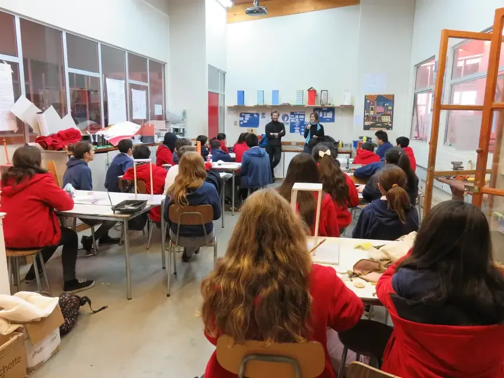
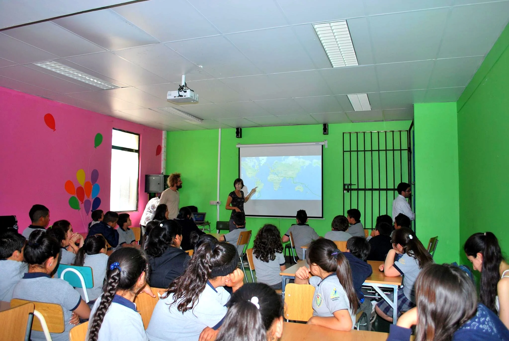
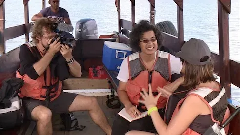

Nos actions · 02 — Conférences
Partager notre expérience avec les élèves, les enseignants et le grand public
Plus de 100 conférences
De l'Arctique aux volcans d'Indonésie, de la jungle amazonienne aux déserts d'Australie — nos conférences racontent tout ce que les films ne montrent pas. Comment on s'est fait fabriquer (et financer) deux ULM sur mesure en Slovénie et au Brésil, comment on a convaincu des scientifiques de nous faire confiance, comment on a traversé un ouragan aux Bahamas, comment on a survécu à un emprisonnement au Pakistan, comment on a évité à quelques secondes plusieurs crashs... On parle aussi de science, de géopolitique, de rencontres improbables, de rêves qu'on pensait impossibles. Chaque conférence est unique, adaptée au public : écoliers, étudiants, entrepreneurs, aventuriers. En français, anglais, espagnol ou portugais.
Revivez l'une de nos conférences
En images
Des salles de classe du monde entier



Plus de 100 conférences
Sélection de conférences
Une sélection de 57 interventions : la liste n’est pas exhaustive.
| Entité | Pays | Public | Langue |
|---|---|---|---|
| Collège Giroud | 🇫🇷 France | 2 classes de collégiens | FR |
| Mairie de Vincennes | 🇫🇷 France | Grand public | FR |
| Collège Passeleu | 🇫🇷 France | 30 élèves de primaire | FR |
| Café de l'aventure | 🇫🇷 France | 50 adultes | FR |
| Lycée Fausten Fleret | 🇫🇷 Guadeloupe | 30 élèves (15 ans) | FR |
| Aéroclub de Martinique | 🇫🇷 Martinique | 10 adultes et élèves | FR |
| Aéroclub de Cayenne | 🇫🇷 Guyane française | 10 adultes et élèves | FR |
| Colegio Emprender | 🇨🇱 Chili | 100 jeunes élèves | ES |
| École française | 🇨🇱 Chili | 50 jeunes élèves | ES |
| École française de Silicon Valley | 🇺🇸 USA | 30 jeunes élèves | FR |
| École primaire de Créteil | 🇫🇷 France | 60 jeunes élèves | FR |
| Lycée Saint Aspais, Melun | 🇫🇷 France | 120 élèves (15 ans) | FR |
| UNESCO | 🇫🇷 France | 15 adultes | EN |
| Guilde européenne du Raid | 🇫🇷 France | 150 adultes | FR |
| Lycée Rocroy Saint Vincent de Paul | 🇫🇷 France | 60 élèves (15 ans) | FR |
| IHEDN | 🇫🇷 France | 250 passionnés de science | FR |
| Festival de St Yan | 🇫🇷 France | 30 adultes | FR |
| CNRS — Festival du Film de Chercheurs | 🇫🇷 France | 100 chercheurs | FR |
| La Main à la Pâte — 5e séminaire international | 🇫🇷 France | Enseignants et élus | FR/EN |
| Observatoire d'Athènes — Rencontres de la Terre | 🇬🇷 Grèce | 100 adultes et familles | EN |
| Gulliver Travel — Irrawaddy River | 🇲🇲 Myanmar | 150 diplomates | EN |
| Cité des Sciences — Auditorium · octobre 2013 | 🇫🇷 France | 380 adultes et enfants | FR |
| Cité des Sciences — Auditorium · janvier 2014 | 🇫🇷 France | 380 adultes et enfants | FR |
| Festival international du film d'aventure — Dijon | 🇫🇷 France | 1000 grand public | FR |
| Festival international aéronautique — Gimont | 🇫🇷 France | 300 grand public | FR |
| Institut Français du Proche Orient, Amman | 🇯🇴 Jordanie | 60 adultes et 20 enfants | FR/EN |
| Ayla Flying School, Aqaba | 🇯🇴 Jordanie | 50 élèves | EN |
| Asia English School, Ahmedabad | 🇮🇳 Inde | 50 élèves (12-14 ans) | EN |
| Andriya Vidyalaya, Space Application Centre | 🇮🇳 Inde | 200 élèves (11-14 ans) | EN |
| Physical Research Laboratory, Ahmedabad | 🇮🇳 Inde | 30 doctorants | EN |
| Fakultas Geografi, Universitas Gadjah Mada | 🇮🇩 Indonésie | 30 chercheurs | EN |
| Universitas Gadjah Mada, Yogyakarta | 🇮🇩 Indonésie | 30 élèves | EN |
| Centre communautaire de Rupanco | 🇨🇱 Chili | 100 adultes | ES |
| Universidad de Los Lagos, Osorno | 🇨🇱 Chili | 30 adultes et enfants | ES |
| CIEN Austral, Puerto Montt | 🇨🇱 Chili | 50 adultes | ES |
| Univ. Adolfo Ibáñez, Santiago | 🇨🇱 Chili | 30 adultes | ES |
| Escuela Saint Lawrence, Tobalaba | 🇨🇱 Chili | 30 enfants | ES |
| Escuela ECBI Federico Acevedo, Santiago | 🇨🇱 Chili | 30 enfants (8-12 ans) | ES |
| Escuela Rural Río Grande, Monte Patria | 🇨🇱 Chili | 50 enfants (6-13 ans) | ES |
| ALMA Observatory, San Pedro de Atacama | 🇨🇱 Chili | 50 adultes | EN |
| Escuela de Toconao, San Pedro de Atacama | 🇨🇱 Chili | 60 enfants (8-12 ans) | ES |
| La Casa de Cartón, Lima | 🇵🇪 Pérou | 50 enfants | ES |
| Conférence Skype — collège de Québec | 🇨🇦 Canada | 45 enfants (10 ans) | FR |
| Univ. Antonio Ruiz de Montoya, Lima | 🇵🇪 Pérou | 30 étudiants (master) | ES |
| Conférence Skype — collège de Wilwerwiltz | 🇱🇺 Luxembourg | 40 enfants (8-12 ans) | FR |
| Univ. fédérale du Roraima, Boa Vista | 🇧🇷 Brésil | 50 étudiants | ES |
| Univ. Antonio Ruiz de Montoya, Lima | 🇵🇪 Pérou | 35 étudiants (master) | ES |
| École primaire de Boa Vista | 🇧🇷 Brésil | 45 élèves (10 ans) | PT |
| École pour adultes, Boa Vista | 🇧🇷 Brésil | 35 adultes | PT |
| Collège de Regina | 🇫🇷 Guyane française | 60 élèves (14-16 ans) | FR |
| École des Trois-Paletuviers · septembre 2012 | 🇫🇷 Guyane française | 40 enfants (4-13 ans) | FR |
| École des Trois-Paletuviers · octobre 2016 | 🇫🇷 Guyane française | 40 enfants (4-13 ans) | FR |
| IRD, salle de conférence | 🇫🇷 Guyane française | 50 enfants et adultes | FR |
| Conférence de presse, aéroport de Findel | 🇱🇺 Luxembourg | 350 adultes et enfants | FR |
| École de Wilwerwiltz | 🇱🇺 Luxembourg | 30 enfants | FR |
| École Jean Jaurès, Esch | 🇱🇺 Luxembourg | 30 enfants (7 ans) | FR |
| Lycée Rocroy Saint Vincent de Paul | 🇫🇷 France | 60 étudiants | FR |
FR FrançaisEN AnglaisES EspagnolPT Portugais

Invitez-nous dans votre établissement
École, université, entreprise, festival : nous adaptons chaque conférence à son public.

Nos actions · 03